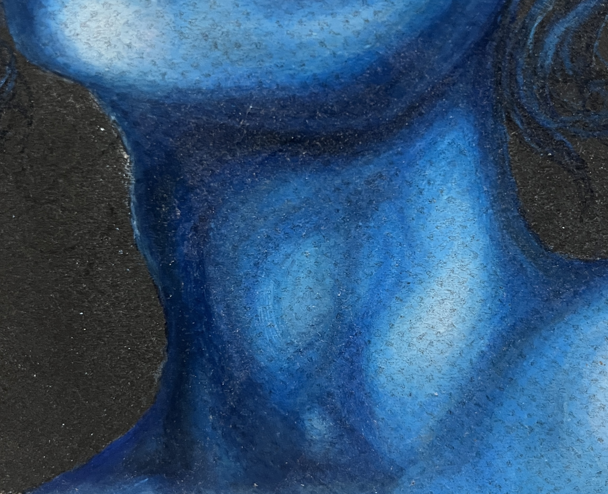
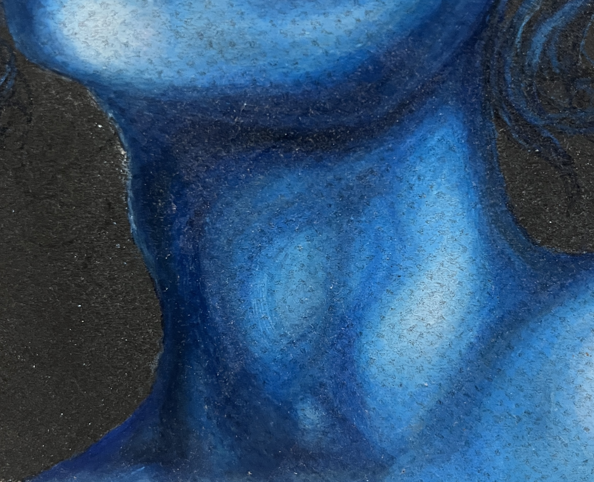

art & illustration
i've been into fine arts & creating work since i was old enough to draw on walls (sorry mom and dad!). here are some of my favorite pieces!
i've been into fine arts & creating work since i was old enough to draw on walls (sorry mom and dad!). here are some of my favorite pieces!


 
